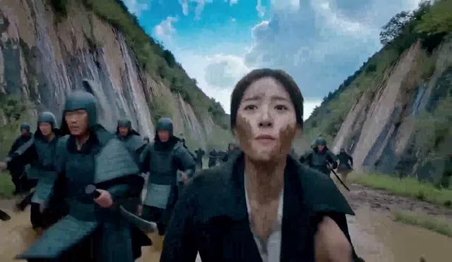
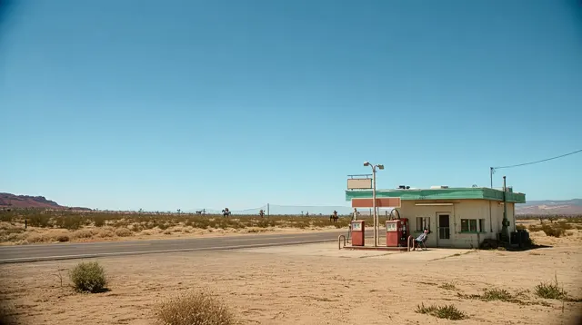
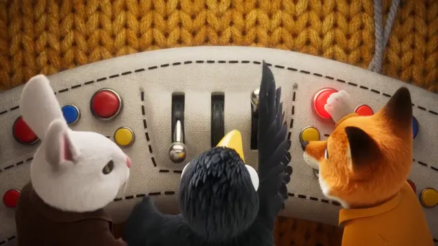

Films, music videos and images, made with AI by Punkcan.



Short film, 2026, 2 min 14 s
Placeholder description. Two or three sentences on what the piece is about and why it was made, written in plain language.
The reading column stays narrow on the white sheet so long notes stay easy to follow.